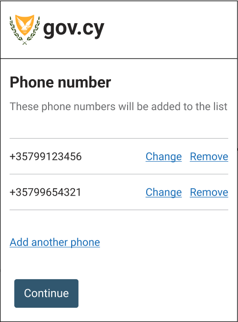

Add multiple things
This pattern explains how to help users add a single or multiple items of the same type
When to use this pattern
Use this pattern when users can add more than one item of the same type. For example, you can use this pattern to collect multiple phone numbers or files of the same type.
To collect information about items of different types consider using this pattern for each type separately.
When not to use this pattern
Do not use this pattern to collect information about items that cannot have more than one value.
How to use it
The pattern consists of a loop between the question page or pages and the summary list page. This loop can be repeated as many times as your service allows.
The flow
The flow should:
- help users keep track where they are in the process, without adding additional design elements on the screen
- validate items one by one
- allow users to change or remove items before they continue
- validate all items as a group
The basic flow is:
- Question page or pages for an item
- Summary list page displaying the items added, change or remove links for each item, options to add another item or continue the journey
- If a user chooses to add another item, return them to the first question page to add a new item

If the service allows the user to continue without the need to add even a single item, add a check answers page after the last question and before the summary list page.
If the service allows the user to continue without the need to add even a single item, add a Continue without items primary button to skip the add item loop and proceed to the next step of the service.
Summary list page
After adding each item or group of items, the user is shown a summary list of what they have added so far and can:
- change or remove items already added
- add another item of the same type
- continue to the next step in the service
This page uses the ==summary list component== with a Remove link added along with the Change link.
Depending on the requirements for each service, validations may be needed for:
- when too many items are added
- when the user tries to remove the only item in the list
- when the user tries to access the summary page without adding a single item
Add another
There are two ways you can implement so that the user can initiate the loop to add another item from the summary list page.
- Ask the user
Would you like to add another itemand let the user clickYesorNousing the radio component.

- Present the user with an
Add another itemlink

We recommend the first method with the radio component but more research is needed for this step. Make sure you use your user research findings to help you decide which method is more appropriate. If your service uses this pattern, get in touch to share your user research findings.
Change or remove items from the summary list page
On the summary list page each item has a ‘Change’ link and a ‘Remove’ link.
If each item has only one question page, clicking ‘Change’ returns the user to that item’s question page with the previous answers prepopulated.

Clicking Remove on the summary list page sends the user to a question page asking the user to confirm that they are sure they want to remove that item. Use the radio component to ask the user to confirm the removal. From here they return to the updated summary list page.

Content
Do not use the word ‘item’ but rather use a short name of the item type. Try to keep the name of the item as short as possible: for example, ‘Add another contribution’ rather than ‘Add another social insurance contribution record’.
Use the same word for an item on question pages, summary list heading and the ‘Add another’ button. For example:
- What is your phone number?
- You have added 4 phone numbers
- Add another phone number
When asking a user for confirmation before removing an item, it can be helpful to include the item name in the radio label, like this:
- Yes, remove
item name - No
Accessibility
Make sure:
- On the summary list page, use the
govcy-visually-hiddenclass to give each ‘Change’ and ‘Remove’ link a unique and descriptive name and help screen readers users. For example:<a href=''>Change <span class='govcy-visually-hidden'>+35799123456</span></a> - For each entry in the summary page, use the
govcy-visually-hiddenclass to indicate individual entry, as show at the making summary lists with arrays screen reader friendly
Contribute
If you have used or researched this pattern, please let us know what you found so we can make it better for everyone. Send us an email at dsf@dits.dmrid.gov.cy to get in touch.
We are particularly interested in:
- research with users with access needs
- research about the ‘Add another’ step